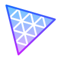

1. 自己紹介 / Profile

石田 湊 / Minato Ishida
得意領域
モバイル
Web
- 出身・居住地兵庫県・伊丹市出身→東京都・調布市在住
- 学年・卒業予定2026年4月入学→2028年3月卒業予定
石田 湊 / Minato Ishida

作品概要 — デジタルプラネタリウム型 日記アプリ(Web) · チーム制作 · U-22プロコン
日記をGeminiで感情分析し、結果を3D空間の星として描画するWebアプリ。
ターゲット:SNS疲れをした人


作品概要 — フットサル大会管理アプリ
未経験から約2ヶ月でフロントエンドを中心に実装。
スコア記録、リーグ戦自動生成など、実際の試合現場で使われる実用的な機能をFlutterで構築。
アーキテクチャからCI/CDまで実務レベルの開発フローを経験。


作品概要 — 思い出管理アプリ
学んだ技術をプロダクトとして形にし、要件定義からデザイン、実装、App Store審査対応まで一貫して担当。
映画やライブの画像を保存し、自分の「感動」を
振り返るためのツール。


プロジェクトを通じて、モバイル・Web（フロントエンド・バックエンド）を横断して開発